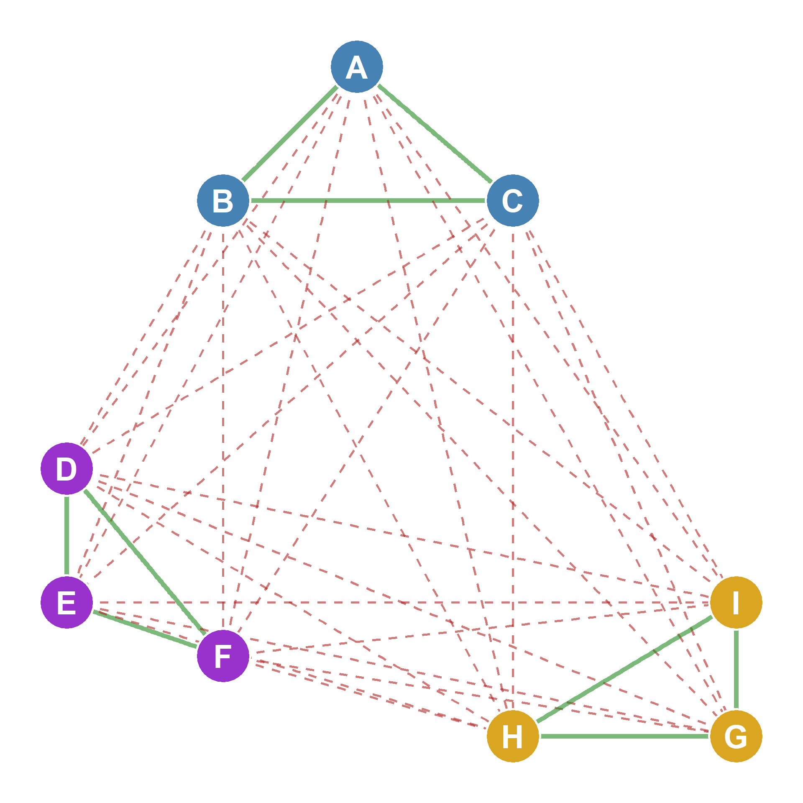
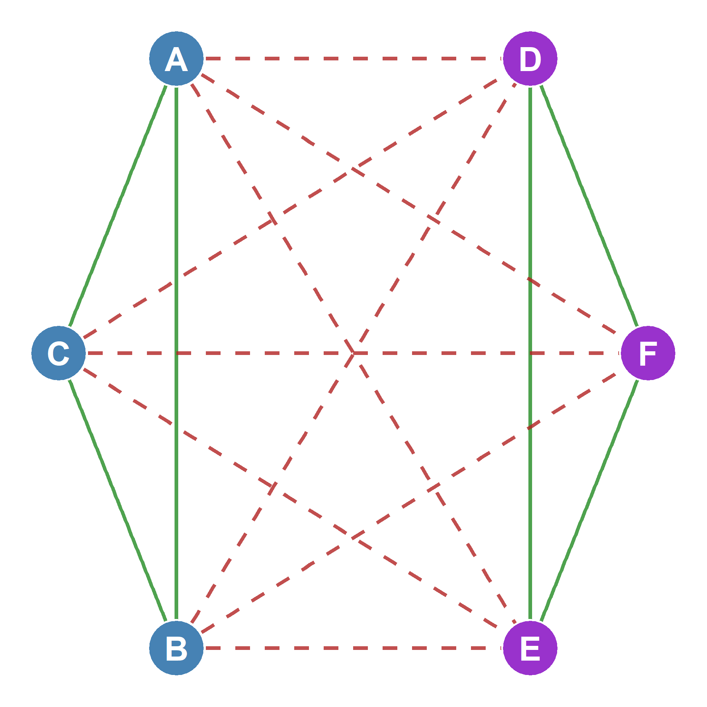
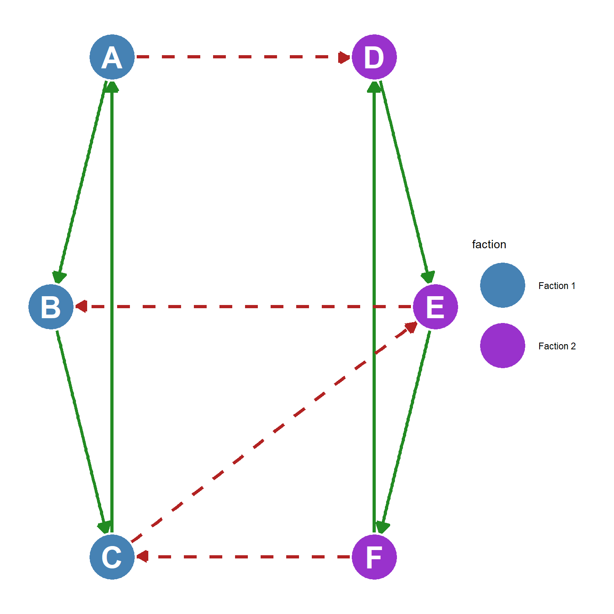
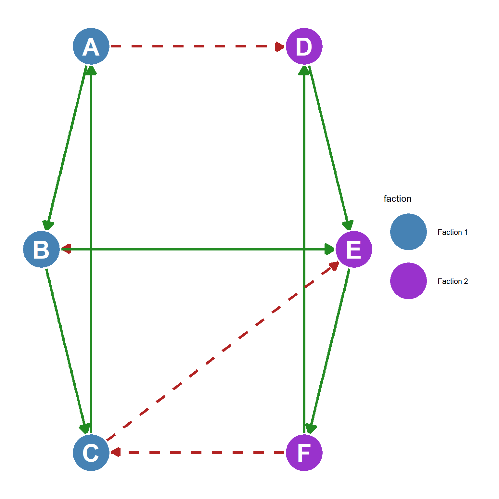
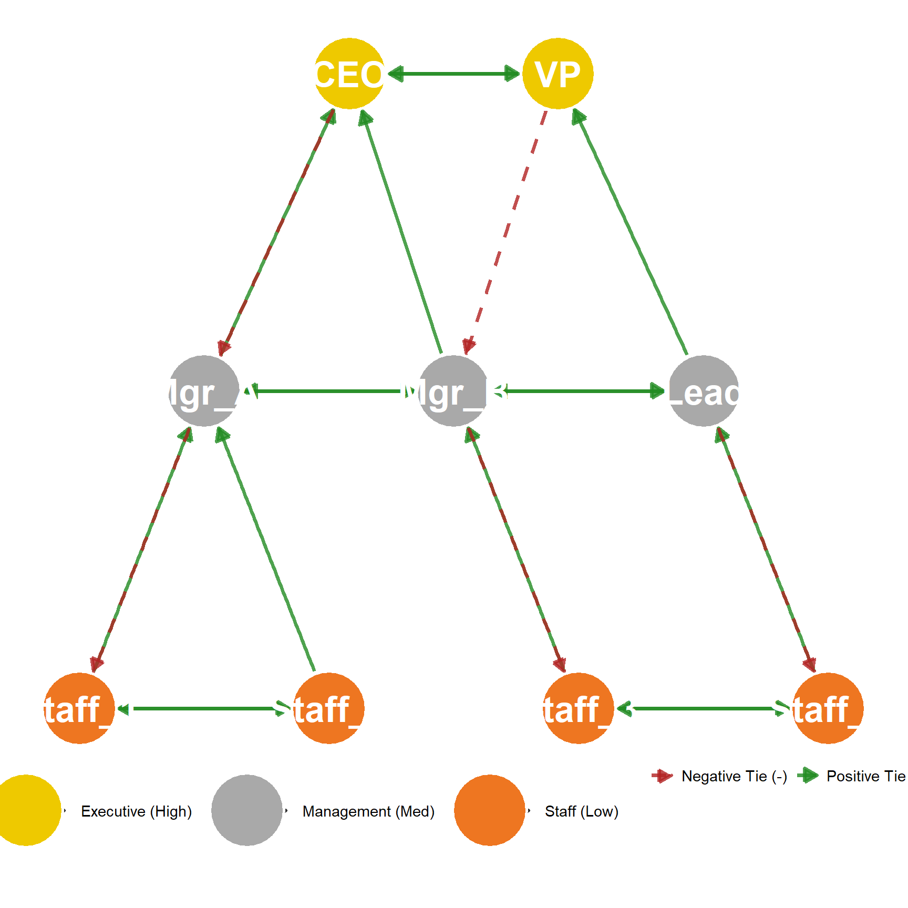

42 Structural Balance
The concept of balance can be extended from individual triads, which we covered in Chapter 41, to the whole network level. This extension is known as Structural Balance Theory.
In its original formulation, structural balance theory applies to complete signed graphs, where every pair of nodes is joined by an edge. However, as subsequent researchers realized, structural balance theory can be applied to any signed graph, complete or incomplete.
First, some graph theory defintions:
A signed graph is a graph featuring one set of vertices (nodes) and two disjoint sets of edges: positive links (\(E^+\)) and negative links (\(E^-\)). In an adjacency matrix representation of a signed graph, positive links are represented by \(+1\), negative links by \(-1\), and non-adjacent (null) ties by \(0\). A complete signed graph is one in which every pair of distinct nodes is connected by either a positive or a negative edge (with no missing edges).
42.1 The Fundamental Theorem of Structural Balance
The Fundamental Theorem of Structural Balance (also known as the Structure Theorem) was discovered by mathematicians Dorwin Cartwright and Frank Harary in 1956 (Cartwright and Harary 1956). The theorem holds for all signed graphs (complete or incomplete) and states:
NoteThe Cartwright-Harary Structure Theorem (1956)
A signed graph is balanced if and only if its nodes can be partitioned into two disjoint subsets (factions) such that:
All positive edges are within the subsets.
All negative edges are between the subsets.
If a signed graph is complete, checking for balance is relatively simple: a complete signed graph is balanced if and only if every cycle of length 3 (every complete triad as defined in Chapter 8) is balanced as defined in Chapter 41. One such complete balanced graph is shown in Figure 42.1.
This theorem implies that structural balance is equivalent to perfect group polarization. For example, in a balanced network, nodes A, B, and C (in blue in Figure 42.1) might form one group with positive ties (green solid edges) among themselves, while nodes D, E, and F (in purple in Figure 42.1) form another group with positive ties among themselves, and all ties between these two groups would be negative (in red dashed edges). Note that in Figure 42.1, every triangle is balanced, going by the sign multiplication rule covered in Chapter 41. In a balanced graph, the polarized structure of these two distinct groups can be recovered by rearranging the rows and columns of the signed adjacency matrix such that nodes in the same group are near one another.

A remarkable property of a structurally balanced graph is its resilience to change in its overall polarized structure. If new nodes are added to a structurally balanced graph, the existing group polarization pattern does not change, provided that the new nodes’ relationships to every other existing node are also balanced.
Essentially, any new node entering such a network will fall into one of the two existing polarized groups, maintaining internal positive ties and external negative ties, thereby keeping the network polarized.
42.2 Paths in a Balanced Signed Graph
Recall from Chapter 11 that a path is a sequence of distinct vertices and edges connecting a start node to an end node. The sign of the path in a signed graph is the product of the sign of each edge in the path. In a balanced graph, the end nodes of a path could belong to the same group, or each could belong to different groups in the polarized structure.
If a path begins and ends within the same group (e.g., both start and end nodes are in Group 1, or both are in Group 2), the product of the signs of its edges will always be positive. The reason for this is that for a path to start and end with nodes in the same group, the path must either stay entirely within that group (meaning all its links are positive, and thus their product is positive) or it must cross between the two groups an even number of times. Each time the path crosses from one group to the other, it traverses a negative link (by definition of the two-group partition). Since an even number of negative links multiplied together results in a positive sign (-1 * -1 = +1), and any within-group links are positive, the overall product of signs for the entire path will be positive.
If a path begins in one polarized group and ends in the other (e.g., starts in Group 1 and ends in Group 2), the product of the signs of its edges will always be negative. The reason for this is that for a path to connect nodes in different groups, the path must necessarily cross the boundary between the two groups an odd number of times. Each time it crosses, it uses a negative link (as per the structure theorem). Since an odd number of negative links multiplied together results in a negative sign (+1 * -1 = -1), the overall product of signs for the entire path will be negative.
In sum, the two-group partitioning of the complete signed balanced graph, creates a predictable environment in terms of path signs. Paths that “stay” within their original group’s alignment (by beginning and ending with nodes in the same group) retain a positive sign, while paths that “cross” the network’s fundamental division (by beginning and ending with nodes in different groups) have a negative sign, reflecting the inherent polarization of the overall structure.
42.3 Cycles in a Balanced Signed Graph
The direct consequence of this two-group partitioning for cycles within a balanced signed graph is as follows: All cycles in a balanced signed graph must have a positive product of signs.
Cycles entirely within one group: If a cycle exists entirely within one of the two polarized groups (e.g., within Group 1 or Group 2), then all the edges forming that cycle must be positive, as per the theorem. The product of any number of positive signs is always positive. Therefore, these cycles are inherently “balanced” with respect to their sign product.
Cycles spanning between two groups: If a cycle involves nodes from both polarized groups, it must cross between the groups an even number of times to return to its starting node. For instance, to go from Group 1 to Group 2 and then back to Group 1, it must cross the “boundary” twice. Each time a link crosses between the two groups, it carries a negative sign. If there’s an even number of such negative links in the cycle, then the product of all the signs in the cycle will be positive (because an even number of negative signs multiplied together results in a positive product).
42.4 Checking for Balance with Matrix Powers
How can we check if a large, complex signed graph is structurally balanced without manually drawing every possible cycle and multiplying their signs? As we learned in Chapter 16, we can leverage the power of matrix algebra.
Recall that the elements of a signed adjacency matrix \(\mathbf{A}\) are defined as: - \(a_{ij} = +1\) if node \(i\) and node \(j\) have a positive tie. - \(a_{ij} = -1\) if node \(i\) and node \(j\) have a negative tie. - \(a_{ij} = 0\) if there is no tie between node \(i\) and node \(j\).
If we raise the signed adjacency matrix \(\mathbf{A}\) to the \(p\)-th power (\(\mathbf{A}^p\)), each diagonal entry \(a_{ii}^{(p)}\) represents the sum of the signs of all closed walks of length \(p\) starting and ending at node \(i\).
Because a structurally balanced graph cannot contain any negative cycles, the product of signs in every cycle is positive. Consequently, if a signed graph is balanced, the diagonal entries of the power the signed adjacency matrix \(\mathbf{A}^p\) must be non-negative for all powers up to the number of nodes in the graph (\(p = 1, 2, \dots, g\)). If even a single diagonal element in any of these power matrices is negative, it indicates the existence of an unbalanced (negative) cycle of that length, meaning the entire graph is unbalanced.
42.5 Measuring Partial Balance: Indices of Balance
In empirical research, social networks are messy, and they are almost never perfectly balanced. Because of this, analysts need ways to measure the degree of balance rather than treating it as a binary (yes/no) state. There are two main structural indices used to quantify partial balance in a graph. First ther is the Cycle Index of Balance. This index is the ratio of the number of positive cycles to the total number of cycles of all lengths in the graph: \[\text{Cycle Index} = \frac{PC}{TC}\] Where \(PC\) is the count of positive cycles and \(TC\) is the total count of cycles. This index ranges from \(0\) (completely unbalanced) to \(1\) (perfectly balanced). Some advanced versions of this index (such as those by Henley, Horsfall, and De Soto (1969)) apply weightings based on cycle length, reflecting the fact that shorter cycles (like triads) generate much more immediate psychological and social tension than very long cycles.
Henley, Nancy M, Richard B Horsfall, and Clinton B De Soto. 1969. “Goodness of Figure and Social Structure.” Psychological Review 76 (3): 194–204.
Harary, Frank. 1959. “On the Measurement of Structural Balance.” Behavioral Science 4 (4): 316–23.
Second, there is the Line Index of Balance proposed by Frank Harary (1959), which calculates the minimum number of edge signs that must be changed (or edges removed) in order to eliminate all unbalanced cycles and make the graph perfectly balanced. If a large network with hundreds of nodes has a line index of 1 or 2, it is extremely close to complete balance, even though a cycle-counting method might find dozens of unbalanced cycles.
42.6 From Balance to Clustering
As we have seen, Cartwright and Harary’s (1956) fundamental theorem of structural balance shows that a balanced network necessarily splits into exactly two polarized factions. While this works beautifully for representing two opposing armies or a strict two-party political divide, it is often too restrictive for some other real-world social networks. In 1967, Davis introduced his Clusterability Theorem to generalize structural balance so that a network could fragment into multiple groups, rather than just two.
Davis realized that by relaxing the rules of balance slightly, he could account for a wider variety of clusterings beyond the classic two group partition of Cartwright and Harary (1956). Specifically, as we saw in Chapter 41, classical triadic balance theory considers a triad with three negative ties (where everyone hates everyone else) to be unbalanced. Davis argued that in a highly factionalized network, it makes perfect sense for three people from three completely different, competing groups to dislike one another, so it is possible to group this triad with the other balanced configurations.
Davis, James A. 1967. “Clustering and Structural Balance in Graphs.” Human Relations 20 (2): 181–87.
Accordingly, Davis (1967) formulated two fundamental clustering theorems that distinguish between complete and incomplete networks:
NoteDavis’s General Clustering Theorem
A signed graph (complete or incomplete) is clusterable if and only if no cycle of any length contains exactly one negative edge.
NoteDavis’s Complete Clustering Theorem
For any complete signed graph, the following statements are mathematically equivalent:
The graph is clusterable.
The graph has a unique clustering.
The graph has no cycle of any length with exactly one negative edge.
The graph has no cycle of length 3 (triad) with exactly one negative edge.
These theorems have important implications for social network analysis. First, they show that triads matter. In complete networks, we do not need to inspect long cycles; looking exclusively at triads (cycles of length 3) is sufficient to tell whether a graph has clusters or not. Secondly, these considerations allow us to separate graphs that have a unique clustering (one special partition of nodes into internal positive groups separated by negative ties) from graphs that have multiple ways of separating nodes into warring clusters. If a signed network is complete, there is a single, unique way to partition the actors into clusters. If the network is incomplete (meaning there are null/missing edges, as in Figure 42.3), a unique clustering is no longer guaranteed, and there may be multiple valid ways to clump actors into groups.
Under Davis’s model, the only prohibited triadic configuration to guarantee clustering is a triad with exactly one negative tie (e.g., \(i\) and \(j\) like each other, but both dislike \(k\), which creates pressure on \(k\) to choose or for the group to resolve the asymmetry). The triad with three negative ties (where everyone dislikes everyone else) is perfectly permissible, as it simply represents three actors belonging to three separate, mutually hostile clusters.
If these conditions are met, the network can be partitioned into any number of distinct clusters (such as the three clusters shown in Figure 42.3), rather than just two. Within each cluster, all existing ties are positive; between any two different clusters, all existing ties are negative.
42.7 Directed Structural Balance and Semicycles
As we saw in our discussion of social relations, ties are rarely completely symmetrical in the real world. In actual social networks, valenced relations are typically asymmetrical: one individual might extend a positive feeling (e.g., liking or friendship) to another who does not reciprocate it, or who might even hold a negative sentiment in return.
To study structural balance under these more realistic conditions, Cartwright and Harary (1956) extended structural balance from undirected graphs to signed directed graphs (or signed digraphs).
42.7.1 Why Directed Cycles are Too Restrictive
In a standard directed graph (digraph), a directed cycle is a closed sequence of nodes and directed edges (arcs) in which all arrows point in the same direction (e.g., \(n_1 \rightarrow n_2 \rightarrow n_3 \rightarrow n_1\)). If we restricted our study of balance to only directed cycles, we would miss most instances of psychological and social tension in a network. In sentiment networks, social tension can exist even if there is no perfect, closed directed loop of arrows. That’s why in Chapter 41 we computed the sign of the triangles ignoring the arrows.
To illustrate, imagine the following three-person configuration (the classic triadic setup discussed in Chapter 41): - You (\(n_1\)) like Alex (\(n_3\)). - You (\(n_1\)) also like Jordan (\(n_2\)). - Alex (\(n_3\)) strongly dislikes Jordan (\(n_2\)).
Mathematically, this configuration does not contain a strict directed cycle because the arcs \(n_1 \rightarrow n_2\) and \(n_3 \rightarrow n_2\) both point toward Jordan (\(n_2\)). There is no way to follow the arrows in a single direction to return to your starting node. Yet, despite the lack of a directed cycle, you still experience a palpable social tension. Your friend Alex dislikes Jordan, but you are friendly with both. You realize that your friendliness with Jordan is inconsistent with your friend Alex’s unfriendliness with Jordan. This psychological pressure is exactly what Heider’s (1946) balance theory predicts, regardless of the direction of the arrows.
42.7.2 Semipaths and Semicycles
To resolve this limitation, Cartwright and Harary (1956) introduced the concepts of semipaths and semicycles in directed graphs: - Semipath: A sequence of distinct nodes and arcs where we ignore the direction of the arrows. We only care that an arc exists between adjacent nodes in the sequence, whether it points from the previous node to the next or vice-versa. - Semicycle: A closed semipath in which the first and last nodes are identical. In other words, it is a cycle in the underlying undirected graph.
Cartwright, Dorwin, and Frank Harary. 1956. “Structural Balance: A Generalization of Heider’s Theory.” Psychological Review 63 (5): 277–93.
Just as with undirected cycles, the sign of a semicycle is determined by multiplying the signs of all the arcs that compose it: \[\text{Sign of Semicycle} = \prod \text{Signs of Arcs}\]
A semicycle is balanced if it has an even number of negative signs (or zero negative signs), resulting in a positive product (\(+1\)). It is unbalanced if it has an odd number of negative signs, resulting in a negative product (\(-1\)). This leads to the fundamental definition of balance in directed graphs:
NoteDefinition: Balanced Signed Digraph
A signed directed graph (digraph) is balanced if and only if all of its semicycles have positive signs (i.e., contain an even number of negative arcs).
42.7.3 Whole-Network Examples of Directed Balance and Imbalance
Rather than focusing on small, isolated triads (which are discussed in Chapter 41), structural balance theory is most powerful when applied to analyze polarization, cohesion, and conflict in whole networks of any size.
By the Cartwright-Harary Structure Theorem, a signed directed network of any size is balanced if and only if its nodes can be partitioned into two mutually exclusive factions such that: 1. All directed positive ties (\(+\)) exist within the factions. 2. All directed negative ties (\(-\)) exist between the factions.
Let’s illustrate this whole-network property using a 6-node signed directed graph.
42.7.3.1 1. A Balanced Signed Digraph (Polarized Stable State)
In Figure 42.4, we have partitioned 6 actors into two factions: Faction 1 (nodes A, B, and C in blue, on the left) and Faction 2 (nodes D, E, and F in purple, on the right).
All internal directed ties (within factions) are positive (solid green lines). All external directed ties (crossing between factions) are negative (dashed red lines). Because every single positive link is internal and every single negative link is external, the network is perfectly partitionable. Under Harary’s theorem, this guarantees that every semicycle of any length in this whole network is balanced, resulting in a stable, polarized state.

42.7.3.2 2. An Unbalanced Signed Digraph (With a Violating Tie)
What happens if we introduce even a single “rule-violating” tie into this network? In Figure 42.5, we have the exact same structure as before, but actor B (in Faction 1) extends a positive directed tie to actor E (in Faction 2).
Because this positive tie crosses the boundary between the two hostile factions, it violates the Cartwright-Harary Structure Theorem. It immediately introduces unbalanced semicycles into the network (for example, the cycle \(B \rightarrow E \rightarrow F \rightarrow D \dashrightarrow B\) now contains an odd number of negative ties). Consequently, the entire directed graph becomes unbalanced, generating systemic social strain and pressure for actors to re-align their relationships.

42.8 Ranked Clusterability: Bridging Balance and Hierarchy
While Fritz Heider’s (1946) original balance theory and Davis’s clusterability model assume purely horizontal, symmetric sentiment structures, real-world social groups often exhibit prominent vertical hierarchies (such as status, dominance, or prestige).
Heider, Fritz. 1946. “Attitudes and Cognitive Organization.” The Journal of Psychology 21 (1): 107–12.
Davis, James A, and Samuel Leinhardt. 1972. “The Structure of Positive Interpersonal Relations in Small Groups.” In Sociological Theories in Progress, Volume 2. Boston: Houghton Mifflin.
To bridge the gap between horizontal sentiment balance and vertical status hierarchies, Davis and Leinhardt (1972) introduced the concept of Ranked Clusterability.
In a ranked clusterable network, nodes are divided into multiple distinct clusters that are hierarchically ordered: 1. Within clusters: Relationships are horizontal and positive, meaning all existing within-cluster ties are positive (\(+\)). 2. Between clusters: Relationships are vertical. Positive directed ties tend to point up the hierarchy (lower-status individuals choosing higher-status individuals as friends). In contrast, directed ties pointing down the hierarchy, or ties between clusters that are unranked with respect to one another, are negative (\(-\)) or null (\(0\)).
This elegant extension ensures that the principles of balance theory hold even when social ties are asymmetric, and it serves as a vital mathematical link to the study of social stratification, prestige, and dominance hierarchies in networks.
42.8.1 Visualizing a Ranked Clusterable Digraph: An Organizational Pecking Order
To make this concept concrete, we can look at a more realistic and interesting example of a vertical hierarchy in a corporate department or organization. In Figure 42.6, we model the sentiment network of a 9-person office partitioned into three hierarchical ranks: the Executive Level (CEO and VP, in gold), the Management Level (Manager A, Manager B, and Lead, in silver), and the Staff Level (Staff 1, Staff 2, Staff 3, and Staff 4, in bronze).
This structure elegantly accommodates different social dynamics across levels:
- Horizontal Peer Solidarity (Within Ranks): Relationships within the same status level are symmetrical and positive. Peers have mutual friendships and alliances (green mutual arrows, e.g., \(CEO \leftrightarrow VP\), \(Staff\_1 \leftrightarrow Staff\_2\)).
- Upward Deference (Asymmetric Positive): Workers look up to managers, and managers look up to executives. Positive sentiment and aspirational liking flow upward the hierarchy (solid green arrows pointing upward, e.g., \(Staff\_1 \rightarrow Manager\_A\) or \(Manager\_A \rightarrow CEO\)). Crucially, these positive ties are asymmetric (they are not reciprocated).
- Downward Dominance (Asymmetric Negative): Authority, sanctions, and discipline flow downward. When a boss disciplines a subordinate, the tie carrying negative affect points downward (dashed red arrows pointing downward, e.g., \(CEO \rightarrow Manager\_A\) or \(Manager\_A \rightarrow Staff\_1\)).
- Social Distance (Null Ties): Many cross-level pairs have no direct tie (represented as \(0\)), which is perfectly realistic in large hierarchies.
This model shows how Davis and Leinhardt’s ranked clusterability accommodates both positive horizontal relationships (peer solidarity) and negative or asymmetric vertical relationships (authority and status aspirations) in a single, stable network configuration.
